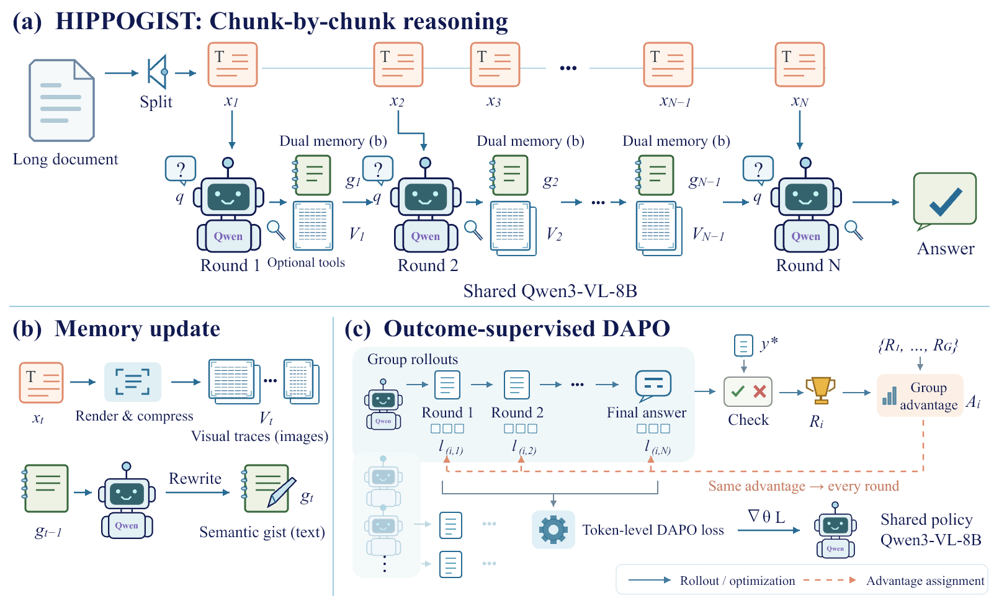
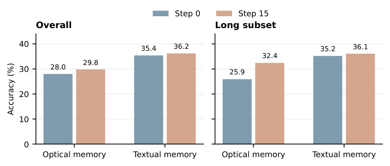

Semantic gist
A short, explicit reasoning state with a proposed 1,024-token budget. It tracks the goal, supported facts, open questions, and recent context. The policy rewrites it after each chunk.
Research draft · Visual traces + semantic gists

Rendering long text as images offers a route to context compression, but a smaller token count does not by itself ensure reliable reading. Our exploratory analysis identifies repetitive generation, confusion between similar passages, and concentrated or diffuse attention during visual reading. Meanwhile, a running textual summary can discard evidence needed later. We introduce HIPPOGIST, a dual-store architecture that reads a long document chunk by chunk while maintaining compressed visual source traces and a short textual semantic gist. Optional image tools support inspection of the active input. We formulate training of the shared Qwen3-VL-8B policy with a multi-conversation DAPO objective: the final-answer reward supplies an advantage to generated tokens in every preceding round, including memory updates. Preliminary LongBench v2 records show configuration-dependent trade-offs between textual and optical memory. In a HotpotQA-trained optical-memory run, the score changes from 28.0 to 29.8 overall and from 25.9 to 32.4 on the Long subset between recorded steps 0 and 15. These results concern a precursor workflow; the complete dual-store evaluation is pending.
A running summary is compact, but may omit details that become useful later. Visual compression retains another view of the source, but legibility and reliable evidence selection remain challenges. HIPPOGIST proposes to maintain both representations at every reading round.
A short, explicit reasoning state with a proposed 1,024-token budget. It tracks the goal, supported facts, open questions, and recent context. The policy rewrites it after each chunk.
Rendered images of observed source content preserve access to wording and layout. A processor-aware visual-token budget controls retention, downsampling, and eviction.
At each round, the policy receives the question, the current chunk, and both memories. It may inspect active images with high_light or resize, then updates the gist. The visual store incorporates the newly observed source. After the final chunk, the policy answers from the retained memory.
HIPPOGIST formulates multi-conversation DAPO training over complete reading trajectories. A verifier scores the final answer, and that trajectory’s advantage weights eligible generated-token losses across every round, including earlier memory updates.
The aggregate loss updates the shared policy. Credit assignment operates through the policy-gradient objective; it does not differentiate through sampled text, image rendering, or resizing. Input memories and tool outputs are excluded from the generated-token loss.
The current evidence consists of development runs on LongBench v2. These results describe textual-memory and optical-memory precursor workflows; the complete HIPPOGIST dual-store evaluation is pending.

| Memory workflow | Recorded step | Overall | Long subset |
|---|---|---|---|
| Optical memory | 0 | 28.0 | 25.9 |
| Optical memory | 15 | 29.8 | 32.4 |
| Textual memory | 0 | 35.4 | 35.2 |
| Textual memory | 15 | 36.2 | 36.1 |
The optical run improves by 1.8 percentage points overall and 6.5 points on Long, while remaining below the textual run in absolute scores. Recorded step labels do not specify the number of optimizer updates.
Representation choices show trade-offs. In the Qwen2.5-VL development runs, an optical summary plus window images scores 29.4 overall and 26.9 on Long, compared with 29.8 and 20.4 for a 1,024-token text summary. These exploratory configurations are not fully matched ablations.
Fixed gist and visual-token budgets bound active history. With bounded current input and tool calls, processing can proceed chunk by chunk while cumulative work grows with document length. This does not imply lossless retention, a measured speedup, or constant accuracy.
Downsampling can destroy characters, eviction can remove evidence, and summaries can overwrite useful facts. The next evaluation compares gist-only, visual-only, and dual-store configurations under matched budgets, then isolates the effects of image tools and all-round RL.
Recorded results for the precursor memory workflows.
Development Results